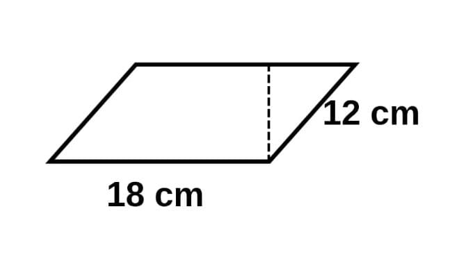
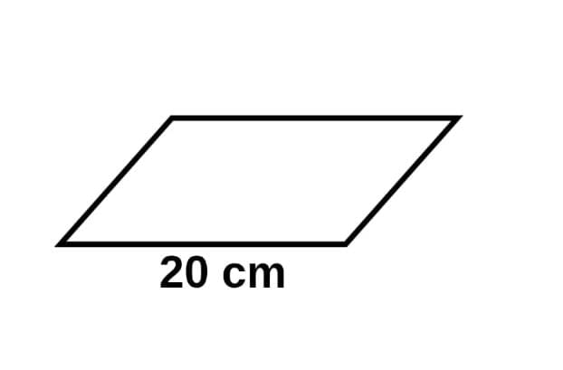
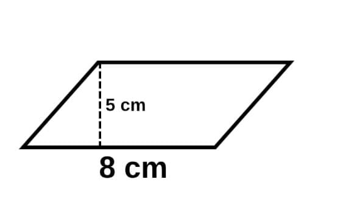
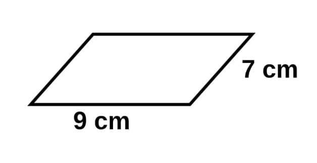

📐 Soal Kuis – Geometri (Jajar Genjang)
1. Sebuah jajar genjang memiliki panjang alas 18 cm dan sisi miring 12 cm. Keliling jajar genjang tersebut adalah …

a. 48 cm
b. 50 cm
c. 56 cm
d. 60 cm
2. Suatu jajar genjang memiliki luas 160 cm² dan alasnya 20 cm. Berapakah tingginya?

a. 6 cm
b. 7 cm
c. 8 cm
d. 9 cm
3. Jika alas jajar genjang 8 cm dan tingginya 5 cm, maka luasnya adalah …

A. 13 cm²
B. 30 cm²
C. 40 cm²
D. 45 cm²
4. Sebuah jajar genjang memiliki sisi miring 7 cm dan alas 9 cm. Keliling jajar genjang tersebut adalah …

A. 16 cm
B. 25 cm
C. 32 cm
D. 36 cm
5. Sebuah taman berbentuk jajar genjang akan dipasang pagar pada seluruh sisinya. Jika panjang dua sisi yang berdekatan adalah 12 m dan 8 m, berapa meter pagar yang dibutuhkan?
A. 20 m
B. 32 m
C. 40 m
D. 48 m
Lihat Hasil
← Kembali ke Menu